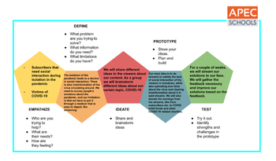

INTRODCTION TO STREAMING
First of all our group started to give ourselves roles there are 3 roles to be exact
Facilitator Scribe Researcher
Facilitator: Christian Guingab
Scribe: Eunice Base, Gerane Mangulabnan,
Spokesperson: Felix Diaz, Angelica Arrazola
and next we did the design thinking to help us understand what design thinking is and we had an idea that it would help us in the future and understand more about streaming.

What is streaming?
There are different types of streaming the term Streaming refers to the continual transmission of audio and video files from a server to a client. While Live Streaming
Is a video projecting a content that’s currently happening at the same time. Before we are able to find the needs of streaming. We needed to understand what streaming is in the first place. There are different types of streaming contents such as Podcasts, webcasts, movies, TV shows and music videos. There are also streaming contents like Q/A Video, Educational Videos, Etc..Using the design thinking method helped us know what streaming content we should use for our topic